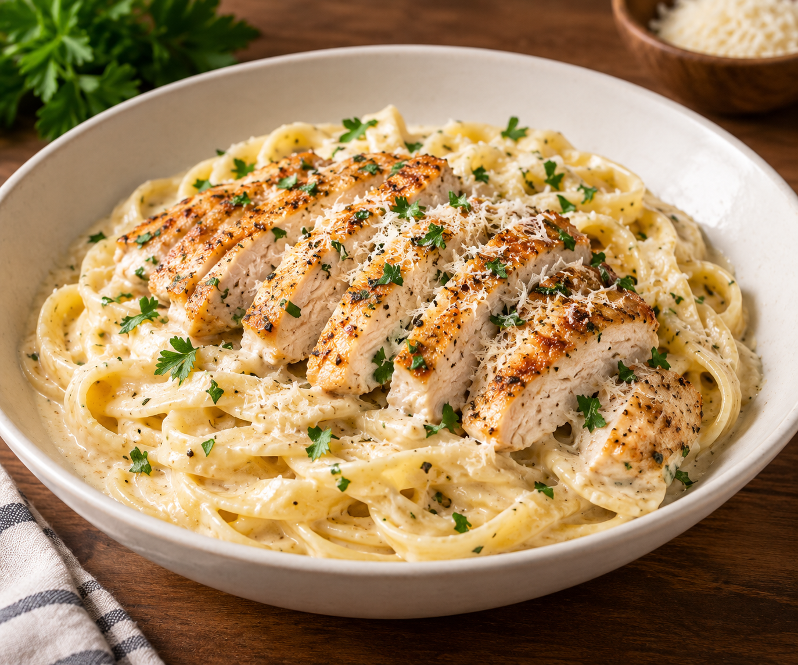

Chicken Alfredo Pasta is a creamy and comforting Italian-American pasta dish.
It's made with tender chicken, fettuccine pasta, heavy cream, butter, and Parmesan cheese.
The preparation is simple: cook the pasta, sear the chicken until golden brown, and make a creamy Alfredo sauce with butter, cream, and Parmesan cheese. Finally, toss everything together and serve hot.
The combination of juicy chicken, creamy sauce, and tender pasta makes this dish rich, flavorful, and satisfying.
Bring a large pot of salted water to a boil. Cook the fettuccine according to the package instructions. Reserve some pasta water, then drain the pasta.
Season both sides of the chicken breasts with salt and black pepper.
Heat olive oil in a skillet over medium-high heat. Cook the chicken for about 5–7 minutes on each side, or until fully cooked. Remove the chicken and slice it into strips.
Melt the butter in the same skillet. Add the minced garlic and cook for about 30 seconds. Pour in the heavy cream and simmer for 2–3 minutes.
Reduce the heat and gradually stir in the Parmesan cheese. Continue stirring until the cheese melts and the sauce becomes smooth and creamy.
Add the cooked pasta to the sauce and toss until well coated. Add a little reserved pasta water if the sauce is too thick.
Top the pasta with sliced chicken and fresh parsley. Serve immediately.
For the best results, use freshly grated Parmesan cheese because it melts more smoothly into the sauce. You can also add mushrooms or broccoli for extra flavor and texture.